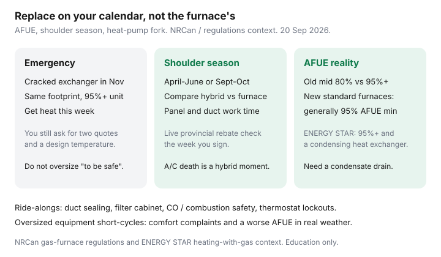

Utilities · Canada
When to Replace a Gas Furnace in Canada: Efficiency, Timing, and Heat-Pump Forks
Furnaces fail on the first cold Tuesday. That is when households buy whatever is on the truck and lock out a hybrid or a right-sized condensing unit for 15 years. Canada’s equipment rule is not a U.S. SEER sticker. New standard gas furnaces sold here generally have to meet a 95% AFUE condensing floor (NRCan / Energy Efficiency Regulations, with narrow exceptions). The decision is timing, ducts, and whether this is a furnace year or a heat-pump year.
Convert fuels in gas vs electric heat. Compare machines in heat pump vs furnace. Federal Greener Homes and new OHPA applications are closed — status.
Disclosure: Heat-pump quote tools are an offer type. Saving Optimizer may earn a commission if we later add partner links. We do not currently claim manufacturer, Enbridge, or contractor partnerships. This is education — not a specification, rebate approval, or installation advice.
Key takeaways
- AFUE is annual fuel utilization efficiency. An old ~80% mid-efficiency vs a 95%+ condensing furnace is a real commodity saving — NRCan’s heating-with-gas note has long used ~18% annual energy-cost cut from 78% to 95% as a worked example, not your bill.
- Most new standard Canadian gas furnaces must meet 95% AFUE (from 3 Jul 2019 rules). You are usually shopping condensing units that need a condensate drain and plastic venting, not a new brick chimney.
- Emergency replacement buys heat this week. Shoulder season (spring or early fall) is when you can still price a hybrid dual-fuel and avoid the truck that is “in stock.”
- Duct sealing, a proper filter cabinet, and combustion safety should ride along. A 95% furnace on leaky trunks is a shiny sieve.
- Oversizing short-cycles: the house hits setpoint, the unit shuts off, rooms feel uneven, and real-world AFUE sags. Ask for a design-temperature load calc, not “same tonnage as the rust.”
AFUE ratings and what mid- vs high-efficiency changes on the bill
AFUE is the share of the gas you bought that became useful heat over a standardized year. A 80% furnace sends about one-fifth of the GJ out the vent. A 95% condensing furnace wrings extra heat from the flue until water condenses — which is why it needs stainless guts, a drain, and PVC or approved plastic venting, not a masonry chimney sized for hot exhaust.
NRCan’s ENERGY STAR heating-with-gas material used a classroom example: replacing a 20-year-old 78% AFUE unit with 95% can cut annual energy costs by about 18%; versus a very old ~60% unit, savings stories run larger. Your bill is m³ × all-in ¢, not that pamphlet. Run last year’s m³ × (1 − old AFUE) / new AFUE as a back-of-envelope, then remember delivery charges do not shrink as fast as commodity.
ENERGY STAR gas furnaces in Canada are condensing, 95%+ AFUE, with a tight fan-energy rule. The legal floor for most new standard furnaces is already 95%. You are shopping quality, right-sizing, and the heat-pump fork — not “should I buy 80% to save money.” Narrow 80% exceptions exist for some manufactured-home replacements and relocatable buildings; that is not a typical detached-house path.

Emergency replacement vs planned shoulder-season installs
| Situation | What you can still do | What you will probably skip |
|---|---|---|
| Cracked exchanger / no heat in November | Two quotes, same footprint, 95%+ condensing, CO check, carbon monoxide alarm | A designed hybrid, a panel upgrade, a week of load-calc shopping |
| Noisy, working, 15–20 years old, April–June or September | Load calc, duct test, hybrid vs furnace vs “wait one more winter,” live rebate check | The first truck that can come tomorrow |
| A/C coil died, furnace is “fine” | This is the natural dual-fuel moment in a gas house | A like-for-like A/C that blocks a heat pump for a decade |
If you must buy heat this week, still write “design temperature” and “right-sized” on the quote. A one-day oversize is a 15-year comfort complaint.
Dual-fuel / hybrid options when replacing a furnace
A hybrid keeps gas for the polar snap and adds an outdoor heat pump for the mild weeks. Controls set the changeover. A conservative installer lockout can erase the hours you paid for — see the companion heat-pump page. Hybrids sometimes squeeze onto a 100 A service because backup is gas, not strips.
Price the hybrid only if the outdoor unit has a snow story and a live provincial or utility stack still exists the week you sign. Do not budget a closed Greener Homes line. Enbridge and other utilities run efficiency programs that open and close; treat mailbox rebates as a verify-live step, not a plan.
Duct sealing and filter upgrades that should ride along
The furnace is a box. The ducts are the delivery. While the cabinet is open:
- Seal the plenum and the obvious trunk leaks with mastic rated for the job — not cloth “duct tape.”
- Fix the filter slot so air cannot bypass a $15 filter. A collapsed filter is a heat-exchanger and blower problem.
- Ask about static pressure. High static is how a “quiet 95%” becomes a roaring, short-cycling 95%.
- Combustion safety: CO alarm, proper venting, and a technician who tests, not just swaps.
Envelope still wins the next Saturday: hatch, rim joist, weatherstrip — DIY air sealing.
Financing, warranty, and contractor quote comparison scorecard
Get two written quotes that use the same design temperature and the same duct story. Score:
- Load calculation shown (heating BTU/h at design °C), not “same as old.”
- AFUE, model, and whether the coil / A/C is in or out of scope.
- Venting and condensate plan (especially in a house that used a chimney).
- Warranty: parts vs heat exchanger vs labour; who files it.
- Permit, gas ticket, and who is on the ESA / provincial electrical piece if a hybrid.
- Financing APR vs paying cash — a 0% flyer is still a price. Compare out-the-door.
The cheap quote that skips a condensate pump or a lining is not cheap.
Avoiding oversized equipment that short-cycles
Contractors oversize “so you never run out of heat.” The house then hits setpoint in ten minutes, the burner shuts down, the far bedroom never catches up, and the unit cycles all evening. Real AFUE sags. Humidity control in shoulder season gets worse. A two-stage or modulating 95% that is right-sized is the comfort product; a giant single-stage “just in case” is the forum complaint.
If two quotes differ by half a ton, ask both for the load sheet. If neither has one, you are shopping a truck, not a design.
Sources & date stamps
- NRCan, Gas furnaces — Energy Efficiency Regulations: most standard residential gas furnaces ≥95% AFUE (from 3 Jul 2019), with listed exceptions (used 20 Sep 2026).
- NRCan / ENERGY STAR, Heating with Gas — 95% condensing ENERGY STAR floor; 78% → 95% ~18% energy-cost example (illustrative).
- NRCan home energy-efficiency and Greener Homes / OHPA status pages — closed federal stacks; provincial verify-live.
- OEB / Enbridge rate and EMPP context — all-in ¢/m³, not a furnace specification.
Frequently asked questions
Can I still buy an 80% furnace?
For a typical detached house, new standard furnaces generally must meet 95% AFUE. Narrow exceptions exist (for example some manufactured-home replacements). Ask the contractor which rule they are using.
How much will 95% save versus my old mid-efficiency?
NRCan’s classroom example is about 18% of energy cost from 78% to 95%. Your number is last year’s m³ and all-in ¢. Delivery does not fall as fast as commodity.
Should I replace a working furnace this month?
Only if the operating-cost worksheet, ducts, and live rebates beat “wait.” A working furnace plus attic air sealing is a valid year.
Is a hybrid better than a furnace-only swap?
On capital, often only if the A/C is dying anyway. Operating cost depends on the changeover setting and your gas vs hydro rates. A conservative lockout can erase the heat-pump hours.
Why do contractors push a bigger unit?
So you do not call them on the coldest night. Oversizing short-cycles. Ask for a design-temperature load calc.